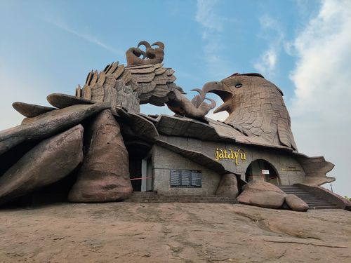
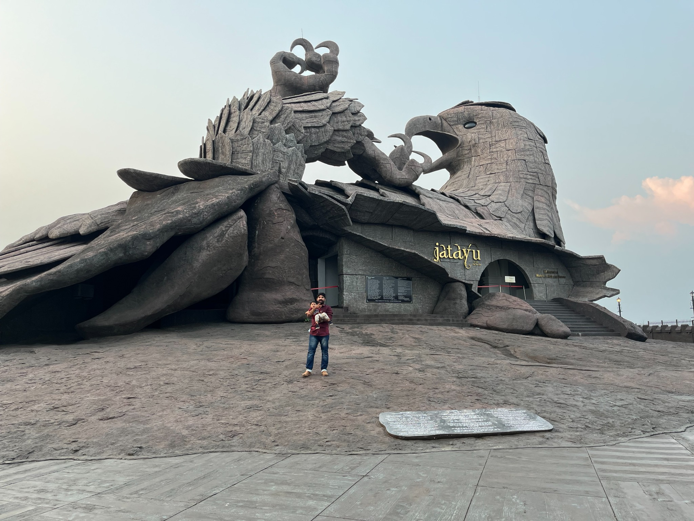

Heritage
Temples, historic landscapes, traditional architecture and the stories of the region.
Home of Jatayu Paara and Jatayu Earth's Centre — a legend carved into the hills of southern Kerala, and a destination worth the journey.
A new Ramayana film has renewed public interest in Jatayu — the noble bird-king who tried to save Sita. Chadayamangalam is the place that tradition holds him to have fallen, and Jatayu Earth's Centre was already a recognised Kerala tourist attraction long before the film.
In the Ramayana, Jatayu is the aged king of the vultures, a friend of Rama's father Dasharatha. When he sees Ravana carrying Sita away, he does not hesitate. Chadayamangalam — also called Jatayumangalam — is the place where, by local tradition, his flight ended.

Ravana carries Sita southward in his aerial chariot, her cries echoing over the forest.
Old and weary, the vulture-king hears her call and rises into the sky to stop Ravana.
Jatayu fights with all that remains of his strength before Ravana cuts away his wings.
Local tradition holds that the wounded Jatayu fell upon the rocks of Chadayamangalam. The epic tells that he lived long enough to tell Rama what had happened to Sita.
“He did not win the battle. He is remembered because he chose to fight.”The spirit of the Jatayu legend

Jatayu Paara — the rock of Jatayu — rises above Chadayamangalam. On it stands Jatayu Earth's Centre, a hilltop tourism park built around a monumental sculpture of the wounded Jatayu, widely described as the largest bird sculpture in the world.
Visitors can climb the hill on foot or ride the cable car, step inside the sculpture, and look out over the Kerala countryside from the place where the legend is rooted.
Official Jatayu Earth's Centre ↗Walk up to, and inside, a sculpture built on the scale of the legend itself.
A hilltop walkway for those who prefer to earn the view on foot.
A ropeway to the top, with views over rock, forest and countryside.
Museum, immersive storytelling and outdoor activities on the hill.
Opening hours, tickets and activities can change. Please confirm on the official website before you travel.
Jatayu is the reason many people come. Chadayamangalam — a river, a road, a community and a landscape — is the reason to stay a little longer.
Temples, historic landscapes, traditional architecture and the stories of the region.
Rocky hills, green countryside and long viewpoints across Kollam district.
The river that flows alongside the village and shapes its landscape.
Ropeway, hilltop experiences and outdoor activities at Jatayu Earth's Centre.
Food, markets, festivals and the everyday character of a Kerala village.
A convenient stop on one of Kerala's main road corridors between its major cities.
Where Jatayu fell, what you can see at Jatayu Paara, and what else Chadayamangalam has to offer — a clear guide for first-time visitors.
Read the article →The questions visitors ask most about Jatayu, Jatayu Paara and Chadayamangalam.
According to local tradition, Jatayu fell on the rock now known as Jatayu Paara in Chadayamangalam, Kollam district, Kerala. Other places in India also claim associations with Jatayu's fall, which is common with ancient epics; Chadayamangalam's tradition is among the best known.
In Chadayamangalam, Kollam district, Kerala (PIN 691534), on the M.C. Road corridor — roughly 38 km from Kollam and 46 km from Thiruvananthapuram.
We have no information that it was, and this website does not claim so. The film has renewed public interest in Jatayu's story; Chadayamangalam is the place of the legend rather than a film location.
A hilltop tourism park at Jatayu Paara featuring a monumental Jatayu sculpture, a cable car, a hilltop walkway of 826 steps, a museum and adventure activities.
Beyond Jatayu Paara: the Ithikkara River landscape, local temples and heritage, rocky hills and countryside, and everyday village life along the M.C. Road.
These can change, so please check the official Jatayu Earth's Centre website before you travel.
Chadayamangalam lies in Kollam district on the M.C. Road, an easy stop between Kollam and Thiruvananthapuram. Check opening hours, tickets, activities and weather before you go.